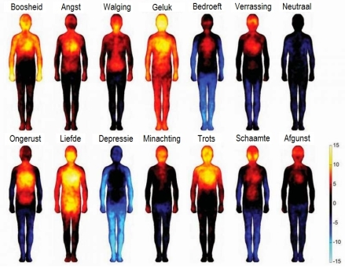

De mens is 'hardwired' als vooral
reagerend. Er zijn leidende en afleidende prikkels;
er zijn Push-Triggers en Pull-Triggers. Alleen push-triggers komen
uit het bewustzijn, de pull-triggers komen van buiten en
veroorzaken gewaarwording. Opgeslagen automatische reacties vallen
onder 'prikkels van buiten'.
De wetenschap heeft al veel eerder aangetoond dat
emoties, gedachten en gevoelens een positieve of negatieve invloed
kunnen hebben op veel fysiologische systemen (voorbeeld: gevoelens
van hopeloosheid zijn van invloed op het hormonale systeem van het
lichaam en veranderen de chemische huishouding in de hersenen).
Maar nu weten we dankzij nieuwe wetenschappelijke onderzoeken dat
de reacties van het hele energetische systeem (niveau 1 t/m 3) op
emoties nog veel ingewikkelder zijn dan we dachten. De gevolgen van
emoties op het energetische systeem zijn hieronder zichtbaar
gemaakt door mensen van de Aalto University in de
VS:
